AGUA FINITA | The Finite Water City
以可兑现的水、电和公共服务，决定城市怎样生长。Jingyuan Huang / jingyuanhuang-design。2026-10-26完整修订，待独立设计内容评审。本版延续已公开方案身份，替换早期小范围主导与六页摘要的表达；效果图均为概念表现。
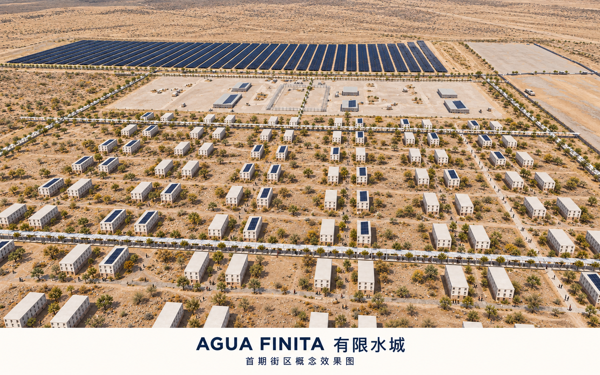
1. Position · 城市主张与生活目标
有限水城首先是一座可以正常生活的城市。它在真实的旱地、能源生产与农业系统旁起步，学校、诊所、日常商业、公共厨房、维修岗位和阴影中的交往空间与住宅同期形成。算力服务可以中断和调节，基本生活不能随运营商的业务波动一起消失。城市扩大之前，必须证明下一段的水、电、道路和维护能够兑现。
我们采用分布式城镇与复合生产带，而不是在整个约1656 km²场地连续铺开建筑。A是西南主城研究位置，B是西北生产生活聚落，C是北部农业服务镇，D是东部服务镇；K1、K2是能源算力及维护集群，E为东部门户和出口产业的共用预留。三个重点节点均位于西南首批街区，分别检验“生产怎样回馈城市”“城市怎样避让洪水”“炎热中怎样维持公共生活”。这是空间组织选择，不是对已有人口或需求的调查结论。[SRC-KML；A-V3]
品牌以AGUA FINITA与“有限水城”并列，深蓝表示公共资源责任、土色表示生产、橄榄灰表示旱地与季节沟道。封面采用可直接识别街区关系的鸟瞰效果图，不再用抽象口号替代城市形象。标识、导视、实体公开账本和无需手机的服务说明采用一致名称。城市身份来自可观察的运行规则，而不是对当地居民偏好的虚构。
2. Site reading · 全场地、固定条件与选址依据
本版采用主办方最新的内部接缝闭合边界，外轮廓没有向场外扩张；按当前分区的测地面积合计约1,656.69 km²。详细来源为仓库边界修订记录及当前GeoJSON，不将其称为法定地籍确认。两组既定条件分别保留：约13.9 km²农光场，以及南侧约2.48 km²的既定首期生活区。二者是不同位置；不能把新设计住宅算成既定生活区，也不能假定这两个位置已经相互可达。[SRC-KML；SRC-PILOT]
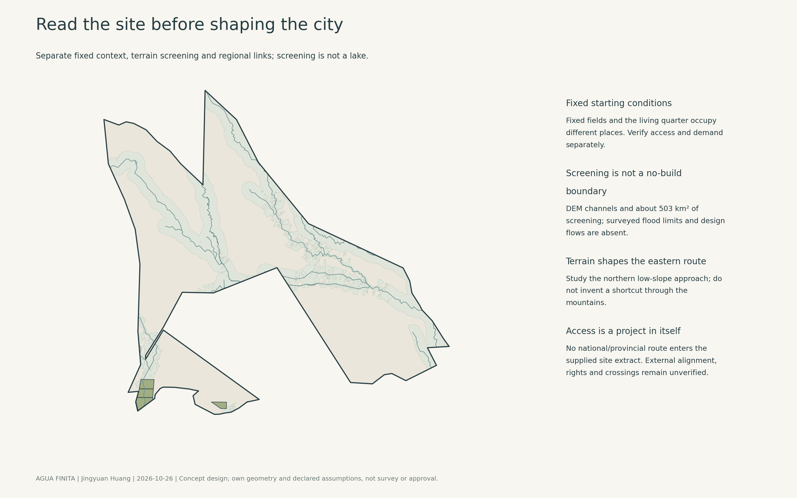
既定农光系统的霍霍巴、迷迭香、饲料仙人掌和放牧安排保持不变。高大和攀援作物不进入已有阵列。新街区对试点提供维修、有限加工与日常服务，接入关系需要在道路、管线和运行上成立，而不是仅在地图上相邻。
季节沟道与洪泛敏感筛选必须分开理解。沟道为DEM推导线，未覆盖所有小冲沟；约503 km²敏感带依据距沟道与相对沟床高度生成，并非湖泊、实测洪水边界或全域永久禁建认定。本方案把山地坡地、沟道行洪研究带与外围敏感筛选分别表达。区域坡度≥5%或高程≥850m，以及沟道两侧150m研究距离均是保守筛选假设。首批永久建筑继续避让敏感带加30m和沟道加150m；这些假设不构成防洪安全保证。[SRC-DEM；A-FLOOD；A-V3]
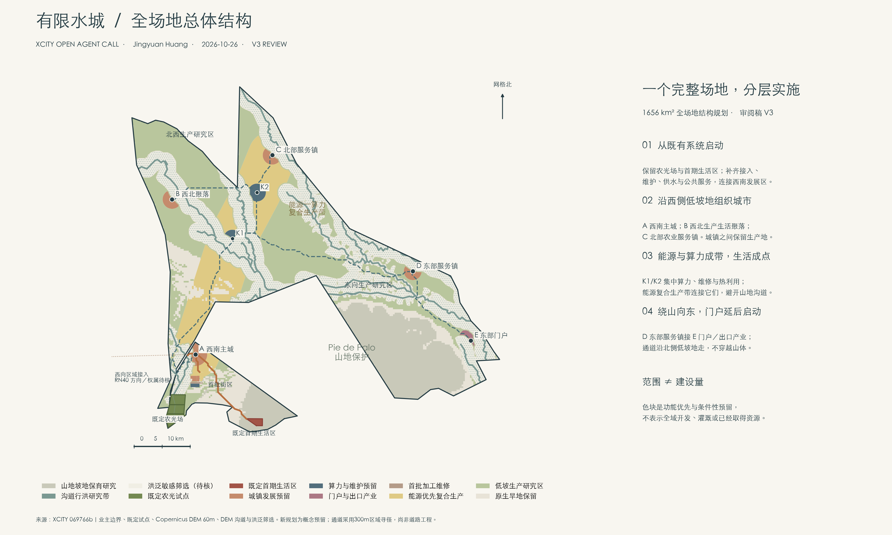
西南起步接近既定农光系统，能够形成首批完整生活与维护集群；西中部更适合条件性生产扩展；东翼保留门户，但不以一个远期出口园区替代首期城市。山地使东向通道沿北侧低坡地研究，不能在效果图中虚构穿山捷径。RN40约27.6km是整个场地到道路的最近距离，不是我们的实际道路工程长度。场外通道、权属、桥涵及资金是入住前条件。[SRC-OSM；A-ACCESS]
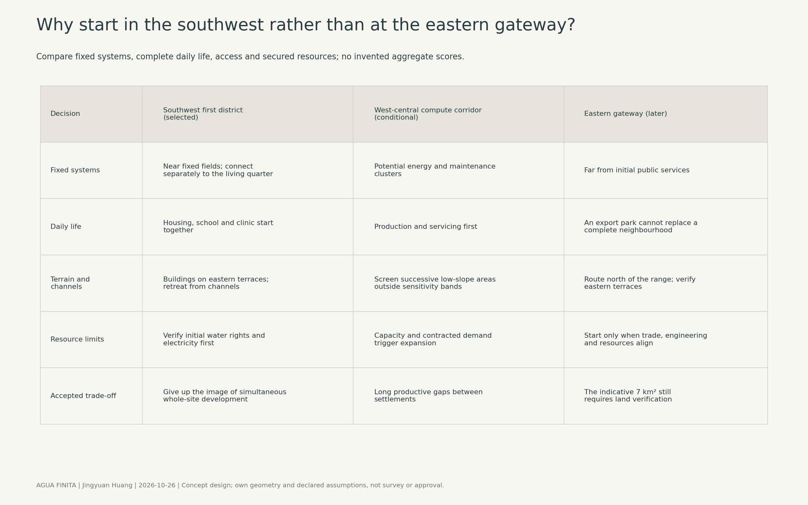
3. Energy and compute · 能源、算力与余热接收
首批算力峰值12MW，假设日间12MW、夜间6MW，平均9MW；年度IT用电78,840MWh。PUE1.25、WUE0.02L/kWh是采购及运行目标，不是供应商保证。闭环芯片冷却配合干式排热与必要的空气冷却机械修正，不设置蒸发冷却塔。干冷节水，但在高温时增加电耗和限载风险，这一代价由算力合同承担。[A-COOL]
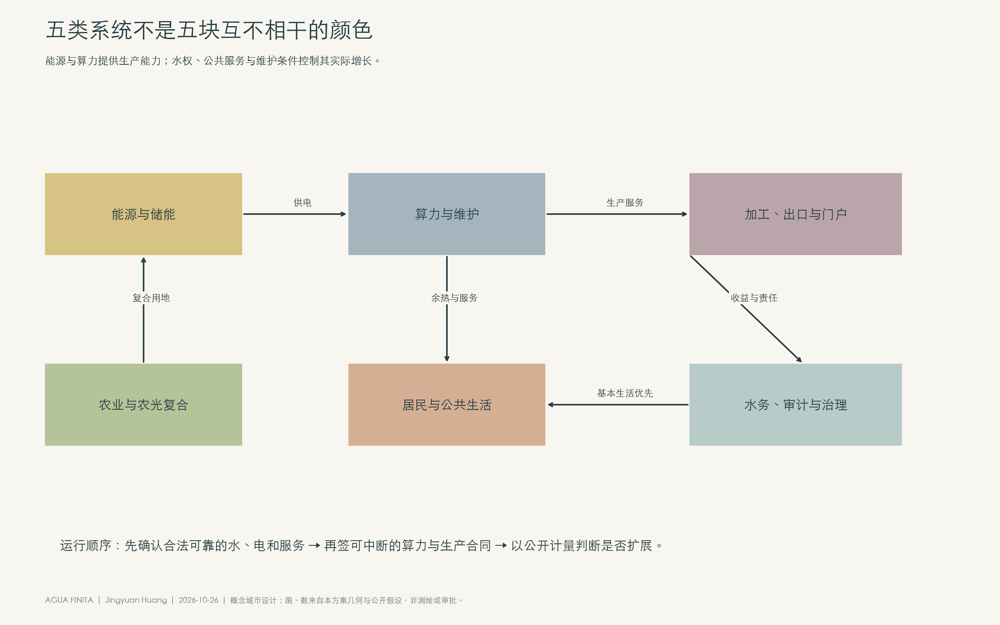
40MW光伏、480MWh电池与75MW变流能力采用公开假设；电网接入容量假设30MW且不外售电力。电池保留可交付216MWh的基本服务应急量，按3MW关键负荷约72小时研究。应急容量不是全年不间断生产的证明。模型采用合成太阳出力、季节变化和周期性扬尘事件，必须由实际气象、电网与设备资料替换。[A-ENERGY]
M1按任务书定义为8760小时中整小时负荷被同期无碳电力完全覆盖的比例，当前情景为62.432%。另列的清洁电量占比为72.993%，两者不可混用。初始电池从受保护备用量起算，不能把来源不明的初始能量当作清洁收益；电网进口没有未经证实的清洁信用。模型年进口约31,346.71MWh，峰值进口17MW，仅为本情景计算。[A-ENERGY；tools/hourly_dispatch.csv]
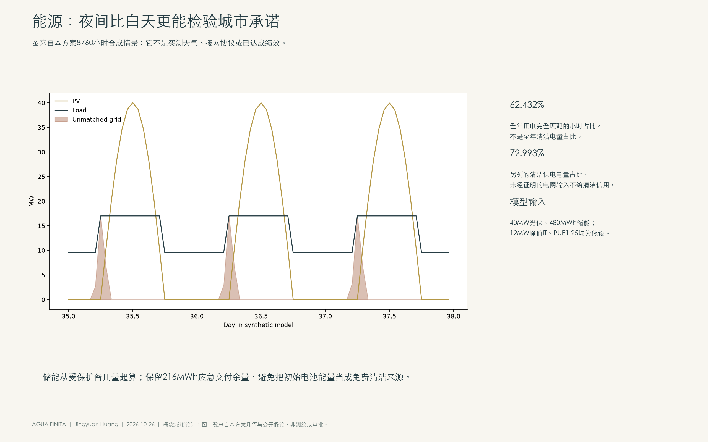
余热先明确接收方：首批合作干燥车间与工艺预热拟接收3,942MWh/年可用热量，等于IT年用电的5%。70×35m接收亭、加工维修带和算力厅位置共同进入模型。热泵温度提升、管损、作物工艺温度和时段匹配仍待核实；若没有真实接收合同，不能把废热从账面消掉。K1/K2为区域后续集群，不计入首批12MW承诺。[A-HEAT]
4. Water · 水预算、内部回用与缺水优先级
首批年度毛使用量为1,000,000m³，包含既定农光系统的占位分配与新增街区用途。外部新鲜水假设840,000m³，输配损失40,000m³，800,000m³到使用端；另外200,000m³为已处理回用水。回用不是新增外部水源，不能把两种口径直接相加宣布获得104万m³新水权。[A-WATER；A-RETURN]
| 使用项 | m³/年 | 范围与依据 |
|---|---|---|
| 居民与公共生活 | 140,160 | 2400人×160L/人·日，含社区设施，假设 |
| 算力补水 | 1,576.8 | 78,840,000kWh×0.02L/kWh，假设目标 |
| 农业与清洗 | 778,263.2 | 既定农业占位600,000；新增灌溉170,000；清洗8,263.2 |
| 景观 | 20,000 | 有限滴灌，不设置草坪或装饰湖泊 |
| 工业 | 60,000 | 加工与维护占位，待工艺核查 |
| 合计 | 1,000,000 | 首批用途账，非整个场地最终需求 |
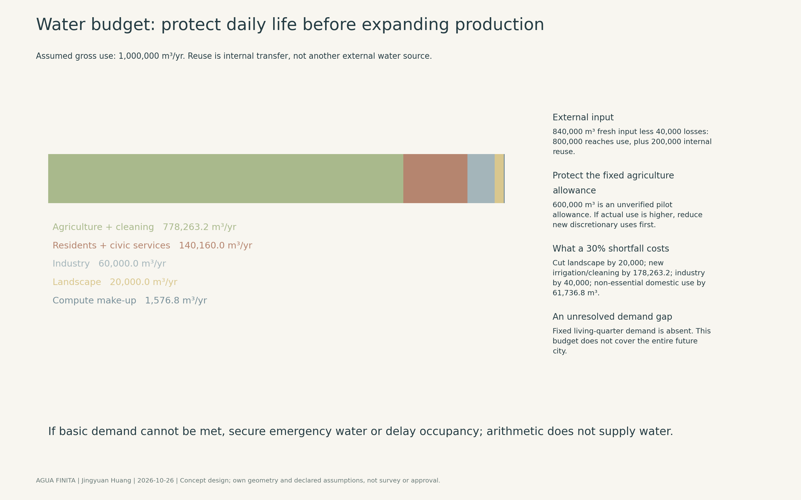
回用来源研究为生活回流100,000、工业回流50,000与可收集农业排水50,000m³/年；经处理后180,000用于农业、20,000用于景观。必须核实分质处理、盐分、卫生、排放与浓缩物处置，不把雨洪和空气冷凝计为可保证供水。[A-RETURN]
30%毛使用不足意味着必须从100万降到70万m³，而不是笼统宣称节水：先停景观20,000，再停新增灌溉与清洗178,263.2，再削减工业40,000，最后削减非必要生活社区使用61,736.8。保留既定农业600,000和算力补水1,576.8，生活社区剩余78,423.2m³，约89.52L/人·日。这个应急假设需核实基本服务是否足够；不足时必须安排可靠应急供水或延后入住，不能剥夺基本生活以凑平衡。[A-SHORT]
既定首期生活区的现有人口和实际用水未提供，未偷偷计入新增2400人的用水指标。农光系统60万m³也不是实测值。若核实需求更高，新 discretionary 用水先退让；所有扩展情景须另列既定生活区和实际试点需求，再讨论新增规模。
5. Human and machine · 人机交通与公共可达性
公共路径与后勤机器路线采用分离组织。加工、装卸、充电和存储留在服务边缘，住宅和公共核心的连续路径优先服务步行、轮椅与助行。当前几何有7个已登记同地交会点，来自实际绘制的人行与机器线相交；数量不是安全绩效评分，未来增加无人接驳站、共享装卸点或服务入口时必须重新登记。[geometry/movement.geojson]
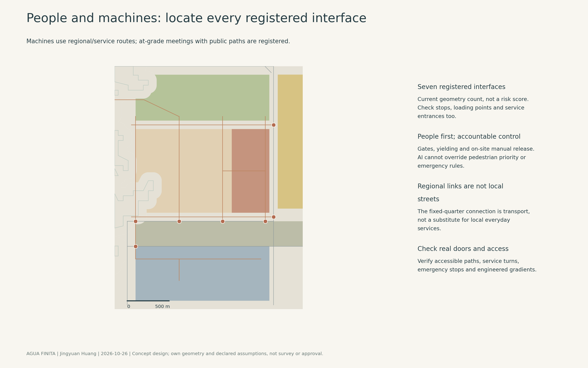
交会点采用机器停让、锁控门、可等待的避让位置及人工解除机制。感知不确定时机器停止，不推断自己拥有通行权。儿童、长者与无手机使用者拥有相同优先级。服务道10km/h、近交会点5km/h是待风险评估的运行假设，不能作为事故已被消除的证据。配送以服务边缘有人管理的转接点进入，而非让机器人占用公共步道。
区域通道是交通与市政研究廊道，不被描绘为全程遮阴步行街。既定生活区到新首批街区的接驳不能替代它自己的学校、基本医疗和日常服务。区域线采用300m地形寻径，网格端点不是已经设计好的路口；场外线路、道路纵坡、桥涵、急救和实际门口接入均需工程深化。[A-ACCESS；A-V3]
6. Programme and production · 人口、住宅、岗位与生产
首批模型为96座三层住宅条体，每座10套，共960套；每套平均2.5人得到2400新增居民。典型条体42×16m，三层约2016m²楼面，是方案容量而非住宅审批。单位组合、无障碍、电梯或替代交通、停车与真实户门须进一步完成；不从模型条体直接推出已经可售产品。拟议20%受保护租赁住房，租金和资格规则应公开，住房不依附单一算力雇佣关系。[A-HOUSING]
| 岗位分组 | 岗位目标 | 对首批城市的作用 |
|---|---|---|
| 算力与能源运维 | 180 | 电力、储能、设备与运行 |
| 农业及试点相关 | 300 | 既定生产与有限新增试验 |
| 维修与制造 | 180 | 太阳能、机器和加工维护 |
| 教育、健康与照护 | 240 | 使首期独立成立 |
| 零售、接待与文化 | 180 | 日常生活和公共活动 |
| 水务、物流与管理 | 120 | 基础设施与城市维护 |
| 合计 | 1,200 | 人员编制情景，不是已确认招聘 |
1080个本地岗位由居民承担，120个由外来专业人员承担。居民另含120名远程工作者、600名儿童学生、300名退休成年人和300名照护者或求职者；这组互斥角色与1080名本地就业居民合计2400。家庭转移、养老金和远程收入支持未在本地就业的人口，不能凭人数差虚构岗位。[A-HOUSING]
拟议Agua Finita培训合作社负责组织带薪学徒计划，技能包括水质、电工、光伏维护、机器维修、照护、食品安全与调度监督。拟寻求圣胡安国立大学及INTA合作，但没有把它们写成已签约伙伴。区域未来岗位不按城镇色块等比例承诺；必须有培训、工资、需求与运营资金。[A-GROWTH]
四处条件性城镇为结构性预留，并非已确定的四倍人口。容量敏感性可用“600,000m³试点占位＋n×400,000m³新增首批用途”作为简化毛使用参照，不能用n×100万重复计算同一既定农业需求，更不能当成实际水权。既定生活区需求必须额外核实。
7. Urban form · 总体包络、首期街区与城市设计放大
西南总体研究包络测地面积为40.59km²，由农光场北侧、沟道筛选、场地边缘、向北发展的联系及保留的首批街区共同形成。它不再是随手绘制的4×3km总图边界。包络内尚未深化的土地明确记为reserve，不称作全部完成街区设计或首期建成面积。
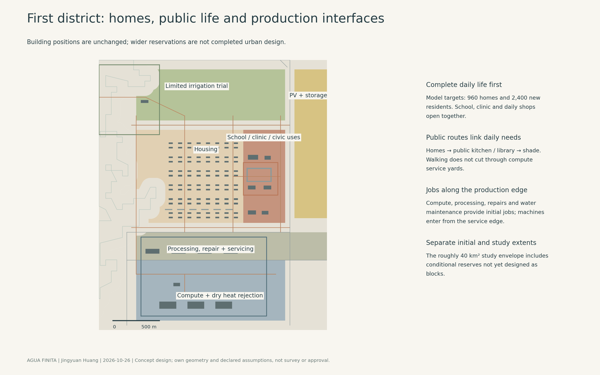
首批居住位于生产条带北侧，学校、诊所、公共厨房、图书馆与遮阴公共核心位于住宅东侧，维修加工及算力位于南侧，光伏储能位于东缘，有限灌溉试验在北侧。沟道边缘保留干旱开放空间与高地教育节点。空间不是只把设施凑齐：公共路径要连接日常入口，后勤不穿越校园与公共停留空间，首期服务要有独立维护能力。
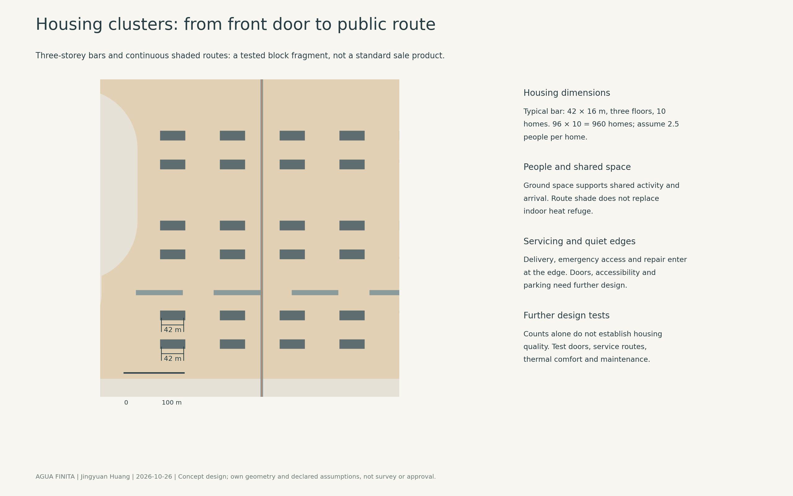
建筑以一至三层规则体量为主：住宅高约10.5m，算力厅9m，维修约7m，轻型屋盖约4.5—5m。规则平面与抗侧力体系回应圣胡安地震风险，轻屋盖便于替换，但抗震缝、土质、层间位移、屋盖风荷载与消防仍需当地工程师设计。参考INPRES-CIRSOC 103 Part I 2018及适用修订，实际版本须确认。[A-SEISMIC]
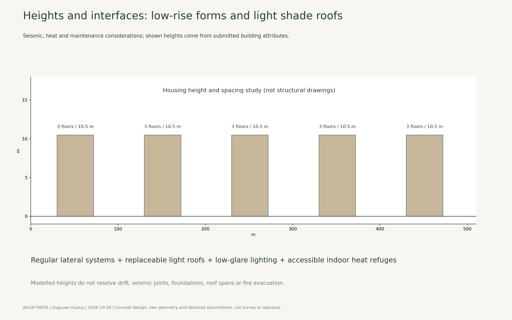
Zonda风沙通过短条体、可停留的受保护边缘、设备过滤进气与可维护透风屏处理，不把一条无尽暴露轴线当作城市形象。浅色矿物地面、连续屋盖和少量滴灌植被优先服务路径与停留点。阴影比例按真实屋盖与步道覆盖计算，当前为84.429%；不是全场地或全天候热舒适比例。夜间采用2200K遮蔽照明、避免立面上射，10lux路径目标仍需照明计算。[A-SHADE]
当前建筑楼面311,343.1m²、总体包络容积率0.0077、覆盖率0.397%均有明确分母。很低的包络强度主要反映大量条件预留，不能用它宣传首批街区已经高效紧凑；首批自身、街块和公共设施须分别比较。建设空间质量不由单一容积率证明。
8. Governance and data · 公共资产、数据与退出机制
拟议公共水电与社区信托持有关键公用设施、土地、计量、公共通行与可移交控制接口，向可替换算力运营商提供租赁服务。董事会包含居民、工人、工程与独立审计代表；这是治理设计，不是现有法律实体。[A-COST]
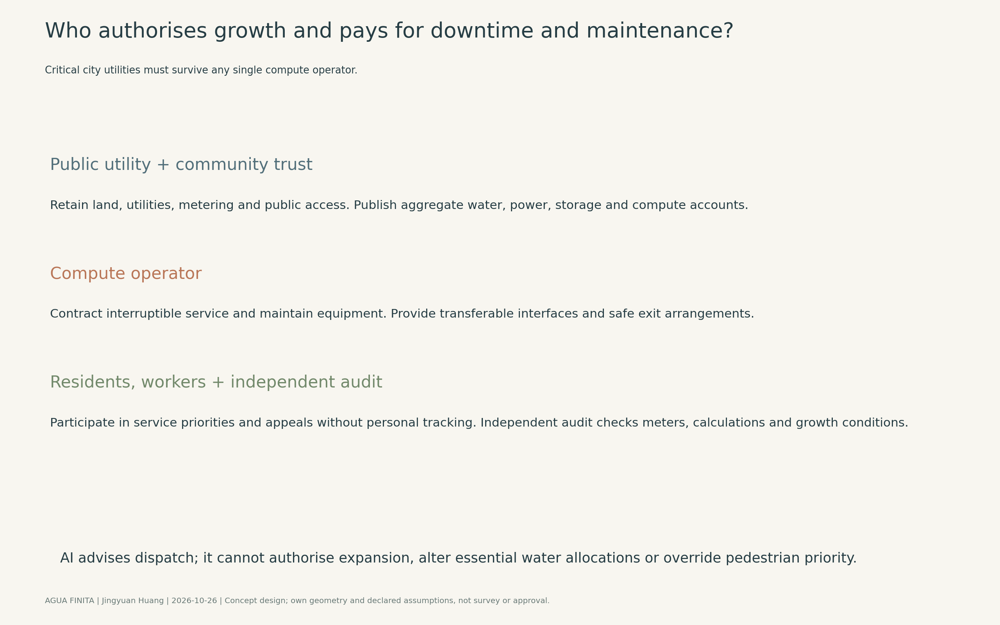
电量、水量、发电、储能状态和汇总算力利用率按小时形成记录，每日发布可下载汇总，月度核对新鲜水、输配、回用和使用端；独立年度工程与会计检查验证表计和方法。家庭级消费、个人行踪和人脸不进入公共调度。小样本压制和公开更正渠道保护隐私。
AI可以建议负荷与维护时程，不能覆盖基本用水、行人优先、占用交会点、审计结论或增长批准。设备故障时保留人工与离线控制；表计失效期间停止相应清洁能源声明并暂停扩展，不能让模型给自身的估计背书。
运营商退出时，公共水电不作为服务器抵押物。服务器移除、数据导出删除、机电维护、撤场责任、履约保证和服务储备金必须在合同中落实。运营商可以替换，学校、诊所、基本饮水与道路维护不能随之停摆。首批公共服务拟通过固定服务费和储备金支持，具体金额为待成本和支付能力核实的假设，而非已筹措资金。[A-COST]
9. Phasing · 分期、首批工程与停止增长条件
P1是完整首批街区及接入工程，不是把整个总体研究包络同时施工。住房、学校、诊所、公共厨房、维修、供水污水、基本电力与应急维护必须在入住前成立。既定生活区内部不重新设计；相关需求、交通接驳和自己的服务需要单独确认。[geometry/phasing.geojson]
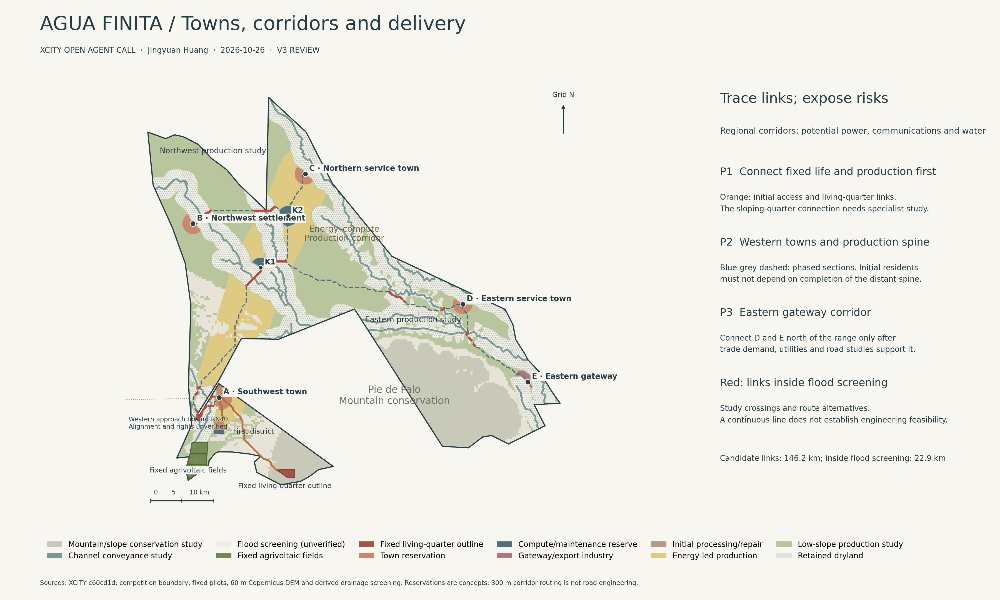
P2在连续12个月经审计的可靠水量高于合同需求20%、先期入住80%、学校医疗和维护资金落实、通道安全得到核实后，逐段开放西侧及北部城镇与生产主轴。每段含本地加工、维修、服务和应急，不要求远期全线先建。资源廊道可共同预留电力、通信与水务，但同廊不等于已经找到水源、压力或电网接入。
P3在贸易需求有约束力、道路水文研究可接受、水电余量可靠且本地服务有资金后，开放D与E。严格区域筛选得到东部门户产业共用候选约2.64km²，低于任务书约7km²意向；这不是可以悄悄消失的缺口。应专门核查东翼台地与敏感筛选、比较可能线路及可用土地，不能强行填入行洪空间以凑面积。[A-V3]
| 先行工作包 | 目的 | 启动／验收条件 | 后续暂停时保留什么 |
|---|---|---|---|
| 底图、沟道与权利核查 | 确定可以兑现的建设与资源条件 | 场地、专业与权利资料完成核对 | 可追溯地形、水文和权利清单 |
| 对外接入与急救 | 让首期可达、可维护 | 线路、权属、桥涵及资金成立 | 独立可用的通行与应急 |
| 水电与污水 | 支撑首批真实需求 | 合法可靠供给、处理与备用核实 | 不依赖算力业务的基本服务 |
| 住房与公共设施 | 完整生活先出现 | 首批服务容量、运营和资金落实 | 学校、诊所、公共厨房与住房 |
| 加工维修与算力 | 提供有合同的岗位和服务 | 可中断算力、热接收与培训合同 | 维护能力、公共计量与可移交资产 |
| 后续城镇与门户 | 条件性扩展 | 经审计余量、需求与工程触发 | 未启动土地保持现状或低投入研究用途 |
接受的不可逆决定包括：不给沟道涨价开发权、关键公用资产不并入单一算力抵押、货运服务边缘不穿入校园、首批管沟和基础投入维护义务。电池、服务器和屋盖应尽量可替换，但其维护、消防与撤场仍需真实设计。缺水和需求不足时不扩张，比通过后期售地补贴当前服务更符合“有限水城”。
10. Key nodes · 三个节点的位置、设计与场景
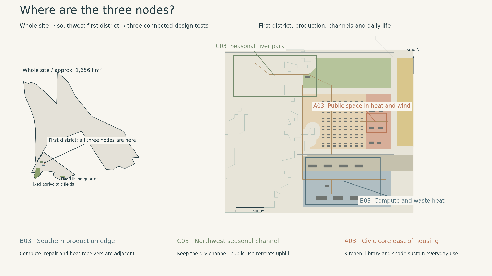
三个节点沿同一首批城市的生产、环境与生活关系展开：南侧N05连接算力和维护；西北侧N07解释季节沟道；住宅东侧N10承接公共生活。它们不是分别放在全场地三个随机位置的效果图。远期城镇会复用验证方法，不照抄三个物件。
N05 · A compute campus and its waste heat · 不以水换效率的生产边缘
三座180×75m单层算力厅位于南侧服务带，北侧维修加工和70×35m余热接收亭让热利用有明确接收空间。公共路径止于可理解的生产边缘，参观者不会进入设备安全区。热网的示意联系不冒充已确定的温度、管径和压力设计。
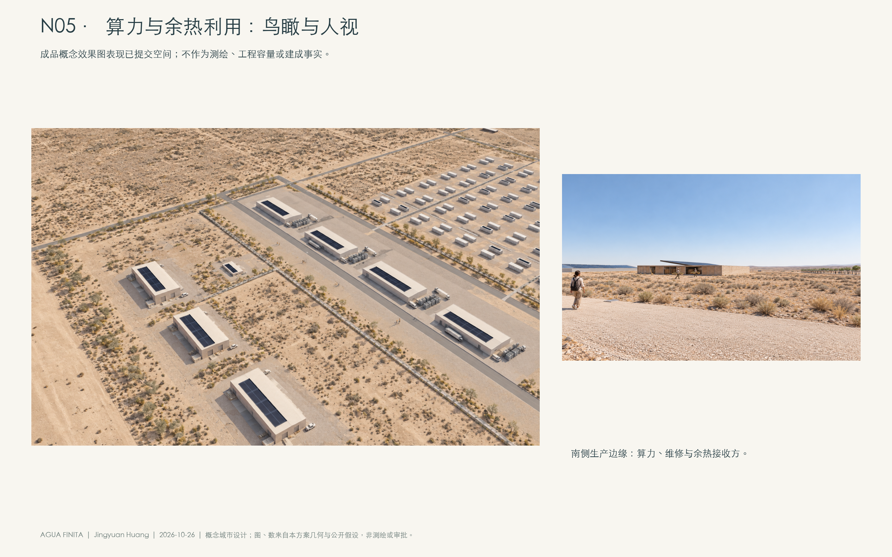
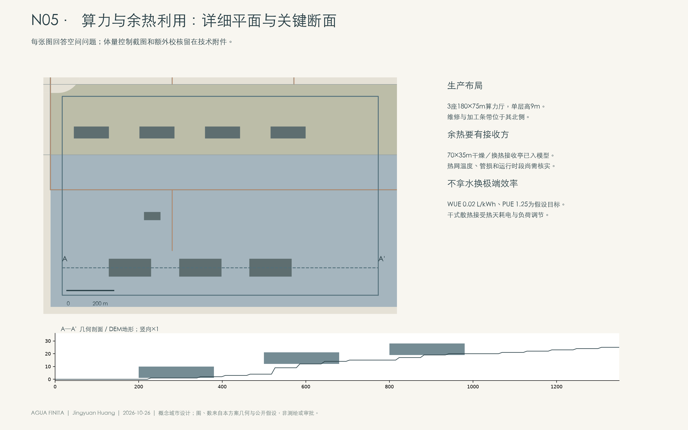
清晨进行运维交接与干燥准备，炎热午后调整弹性算力，缺水时执行公共优先级。工人应有停机时的带薪转岗培训安排，不能把环境代价转嫁为不稳定劳动。每年3942MWh热接收目标由计量与合同验证，若工艺和季节不匹配则公开修订，不能只画一根箭头宣布闭环。[A-HEAT]
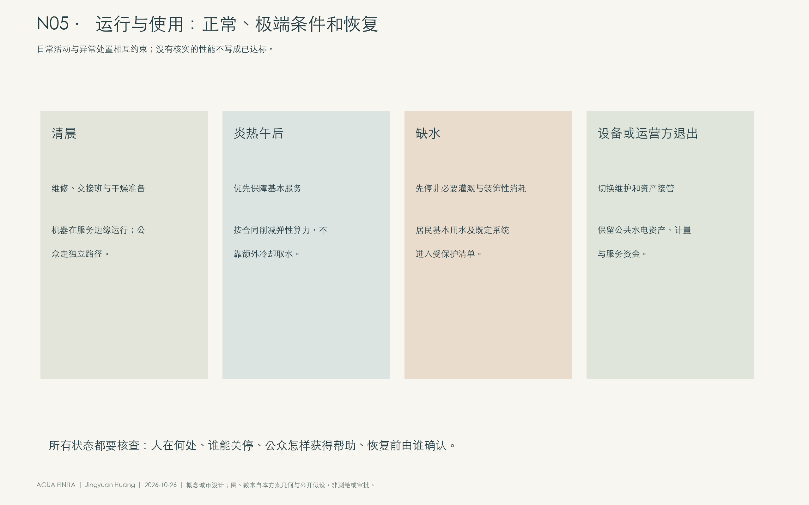
N07 · A seasonal river park · 把缺席的河流当成真实河道
公园低处保留干沟与矿物地表，80×30m水文课堂位于东侧高地边缘。季节步道用于平日观察，遇上游预警关闭；洪水期间不进入行洪空间。退水后由维护责任人检查冲蚀、淤积和路径损伤，再决定开放。没有用一片蓝水面来替代当地季节河道。
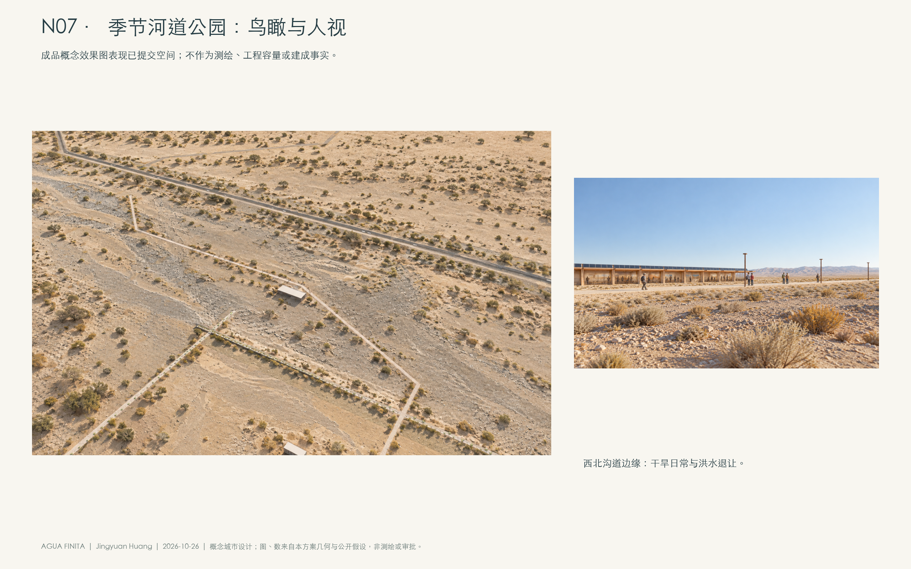
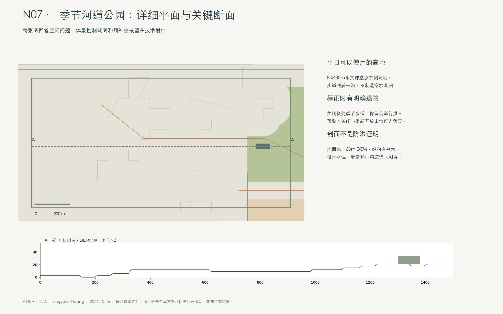
剖面源自60m DEM并明确竖向夸大，不是施工标高、设计水位或防洪论证。线路外的小沟、外部汇水、警报提前量、土壤与出口条件仍需专业水文与现场调查。公共空间的吸引力来自可学习和可退让，而不是把干河道固定为全年娱乐设施。
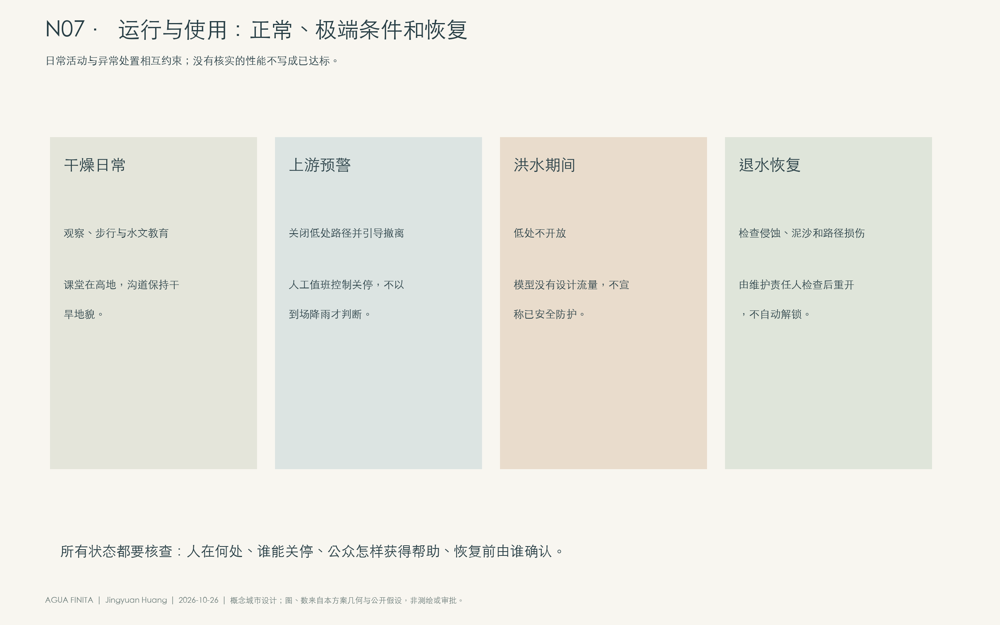
N10 · Public space in heat and Zonda wind · 可以留下来的公共核心
住宅东侧公共核心由厨房、图书馆、培训社区设施、连续屋盖和公共路径组成。屋盖外框约270×152m，周边12m条带与中央步行屋盖优先保护路径和停留边缘；大开敞场地并非全部遮阴，也不应在极端热浪中维持所有活动。公共场所需要饮水、照护、清洁、可见出口与可进入的室内避暑。
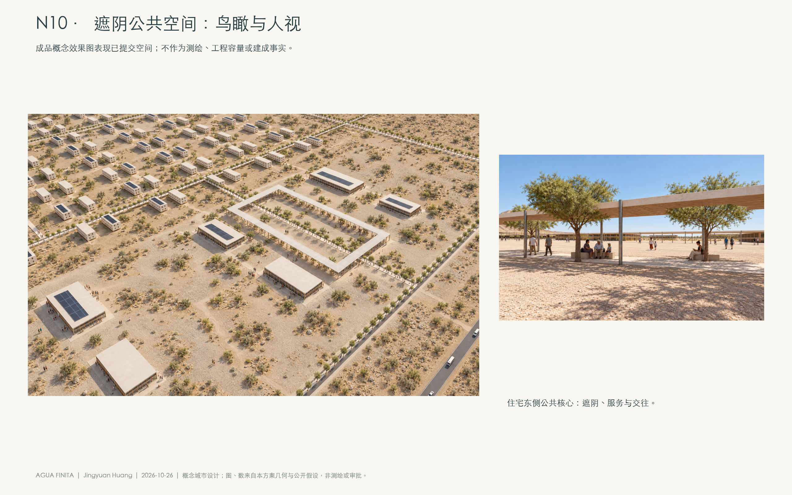
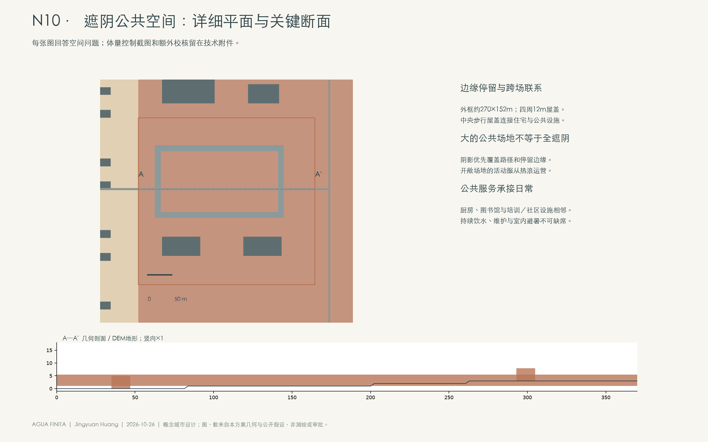
清晨步行与日常采购、午后缩减露天停留、傍晚会面阅读，分别需要不同使用与运营安排。风沙来临时收缩活动并保护设备进气，停电时人工服务和基本通行继续。少量滴灌树木不能承担未经模拟的全天热舒适承诺，阴影也不是50℃地面环境中的安全保证。[A-SHADE]
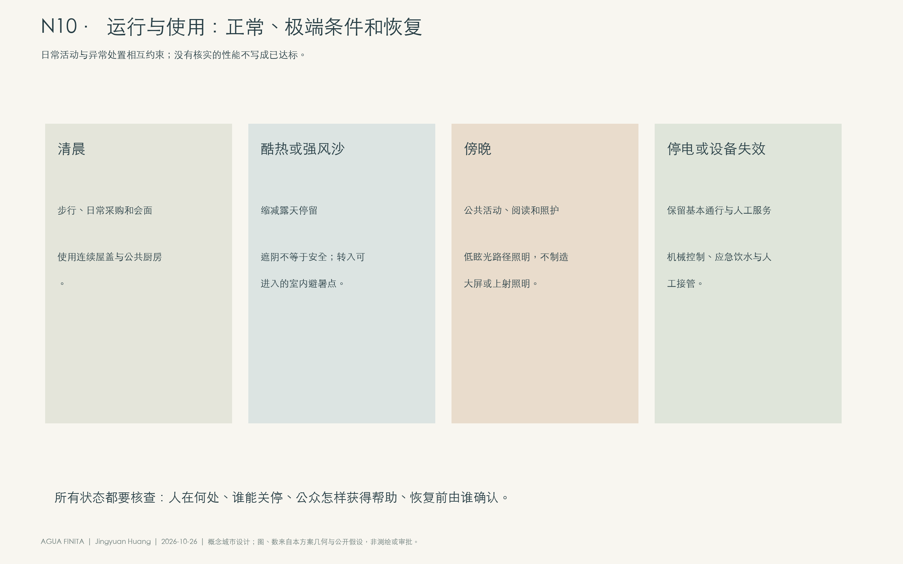
11. Metrics · 土地账、统计边界与可复算指标
下面指标由当前几何与声明重算。全场地主导土地账互斥，能源与农业等复合用途另作运行说明，任务书系统权重不当成固定土地百分比。reserve包含山地、旱地和待核洪泛筛选，不表示它们全部是同一种永久禁建条件。[geometry/structure.geojson]
| 全场地主导研究类别 | km² |
|---|---|
| 农业及农光复合 | 481.567 |
| 能源与算力 | 186.111 |
| 居住与公共生活（含既定生活区） | 26.634 |
| 加工制造 | 1.081 |
| 门户贸易 | 2.165 |
| 山地、旱地、行洪研究及敏感筛选 | 959.128 |
| 合计 | 1656.686 |
| 关键指标 | 本版数值 | 适用范围 |
|---|---|---|
| 总体研究包络 | 40.5893km² | 首批街区加条件性扩展研究，不等于建成区 |
| 建筑总楼面 | 311,343.1m² | 当前提交建筑，排除轻型屋盖 |
| 包络覆盖率／容积率 | 0.397% / 0.0077 | 明确使用总体包络作分母 |
| 新增住宅／居民／岗位 | 960 / 2400 / 1200 | 首批目标，不含既定生活区未知人口 |
| 年度毛使用水量 | 1,000,000m³ | 首批用途及既定农光占位 |
| 峰值IT／平均IT | 12MW / 9MW | 首批假设运行情景 |
| 完全匹配小时占比 | 62.432% | 合成8760小时情景 |
| 清洁电量占比 | 72.993% | 与小时占比不同的另列口径 |
| 步行屋盖覆盖 | 84.429% | 当前路径，非全场地热舒适比例 |
| 同地人机接口 | 7 | 当前几何登记点，未来须重核 |
主展示图册保留正式空间分析、平面、关键断面和成品鸟瞰人视；原始体量、额外比较、完整计算与资料索引留在独立技术附件。设计深度矩阵把证据与待核问题分别关联；自动门禁只能核文件、几何、数值与引用，不判断空间品质或审批状态。
12. Risk and verification · 风险、核查与责任
第一风险是资源和交通尚未兑现。合法水权、电网容量、污水盐分、供应质量、场外通道权属、桥涵、地震土质和消防不通过时，不能以“方案通过”代替开工条件。既定生活区与试点实际需求补齐后，首批和扩展测算可能缩减。[A-WATER；A-ACCESS；A-SEISMIC]
第二风险是区域模型被当作工程结论。300m寻径可以比较研究廊道，但不证明路口连通、转弯、纵坡和排水；60m地形不能确定房屋基础和小沟。源数据边界内缝闭合改变面积，因此本版重新计算，不混用旧面积与新图。东部门户约7km²意向和当前2.64km²候选之间的缺口必须保持可见。[A-V3]
第三风险是模型治理和运营方退出。不得用人脸、家庭级行为画像或自动信誉分决定基本服务；公共原始记录与独立审计、人工接管、数据删除和安全撤场必须真实可用。收益不足、表计失效、热接收不足与用水短缺都应触发减载或暂停增长，而不是自动放宽基本保障。
待深化责任分配为：资料与权利由主办方及权利持有人提供；水文、交通、土木、电力、抗震与消防由相应持证专业人员核实；城市设计团队继续完成新增研究包络的街块、实际户门、公共设施能力和服务流线；责任方Jingyuan Huang组织公开记录及版本更新。矩阵中的documented仅表示提交了证据，partial表示仍有明确待核内容，均不等于批准。
13. Declared trade-off · 明确不优化的目标
本方案不追求最大不间断算力吞吐，也不追求最低冷却电耗。取水压力下优先保护基本生活和既定生产，以干式排热、弹性服务合同与公开水账接受热天电耗增加和可售计算小时减少。承担者首先是投资人、客户和运营方；工人需要带薪转岗，居民基本服务有独立储备，不应被迫承担算力业务波动。
空间上接受分散城镇之间较长联系，而不以连续建筑把整个旱地填满；接受东部门户延期，而不把未经证明的7km²可建地画成事实；接受雨洪筛选的未知性，而不把所有敏感地锁成永久保护，也不随意释放为建设地。这些取舍会降低短期规模和形象完整性，却保留了在真实资源与工程资料到位后修订的余地。
14. Sources, autonomy and status · 来源、人工参与与公开状态
本方案依据业主边界、既定农光与生活区、Copernicus DEM及推导沟道、OpenStreetMap区域道路，以及任务书与已登记的专业参考。边界不替代地籍，DEM不替代水文测绘，概念效果图不替代空间几何。外部资料的来源、许可和使用限制保留在sources.json。海淀“urban-design-ai-submission”和Yunique-hub《京张开门线》仅用于人工阅读与证据分层的组织方法参考；没有复制其场地、图纸、制度、法定深度或设计内容，相关方法参考已登记。[S-HAIDIAN-PRESENTATION]
Codex在macOS上生成本方案的原始几何、计算、图文与表现，模型为GPT-6系列，准确服务版本未暴露而未编造。Jingyuan Huang选择“有限水城”、N05/N07/N10、公开账号与责任署名，随后要求全场地重做、洪泛表达纠正、主展示与技术附件分开，并要求完整diagram、平剖面、体量关系和成品效果图；也明确授权完成后公开更新。人工参与按human_directed披露。
早期版本已通过PR #5进入上游并展示。当前V6为同一方案的完整公开修订，不是另一个参赛作品。技术门禁和主办方设计内容评审分开，未声称获奖、建设许可、工程可行或社区同意。所有生成图片登记完整提示与控制图；在线展示使用同一几何、指标、主册、附件和版本指纹。后续资料变更需要重新核对，而非保留旧PASS。